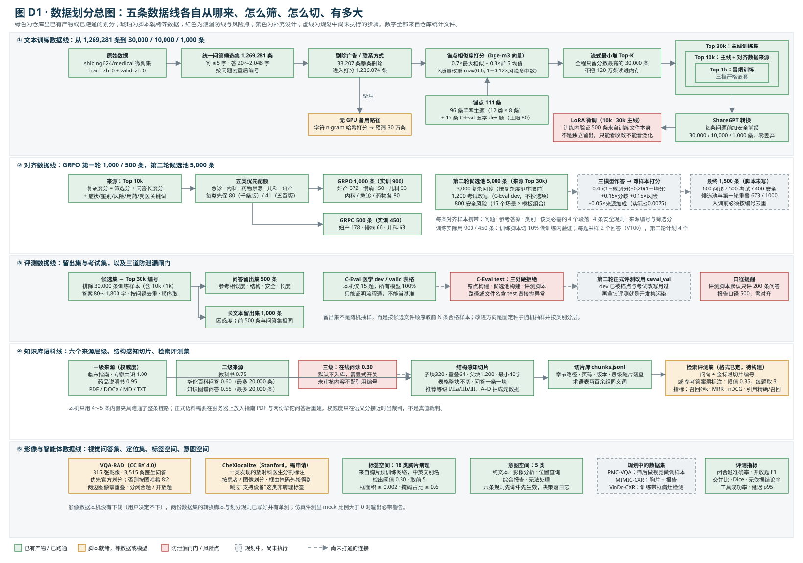
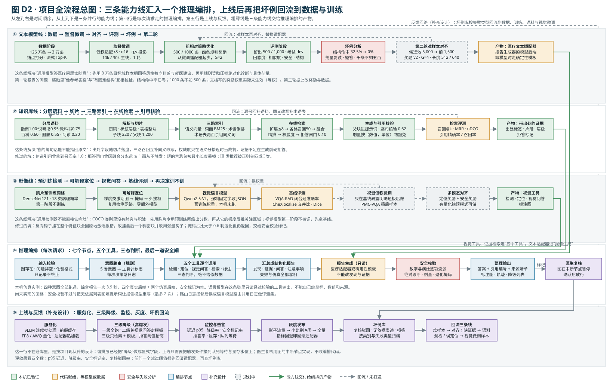
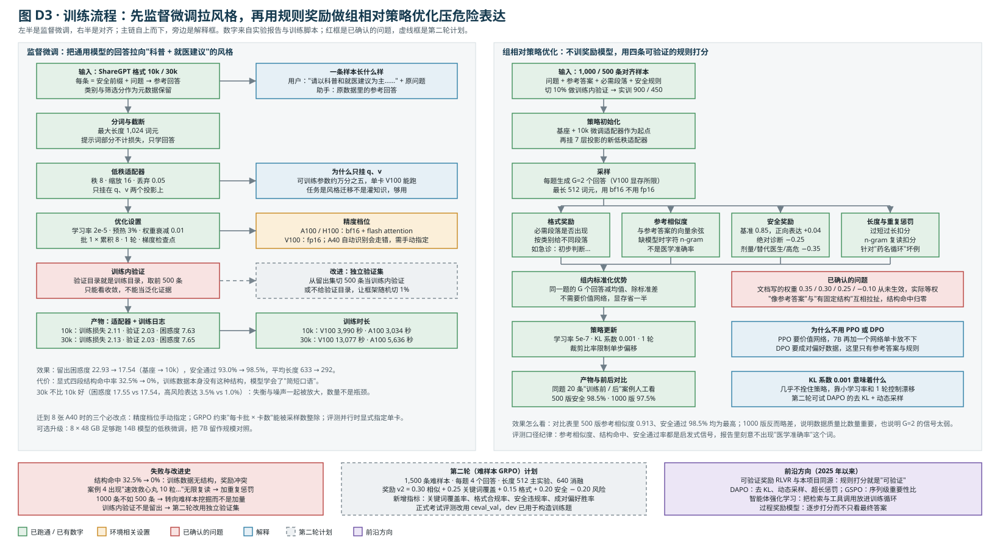
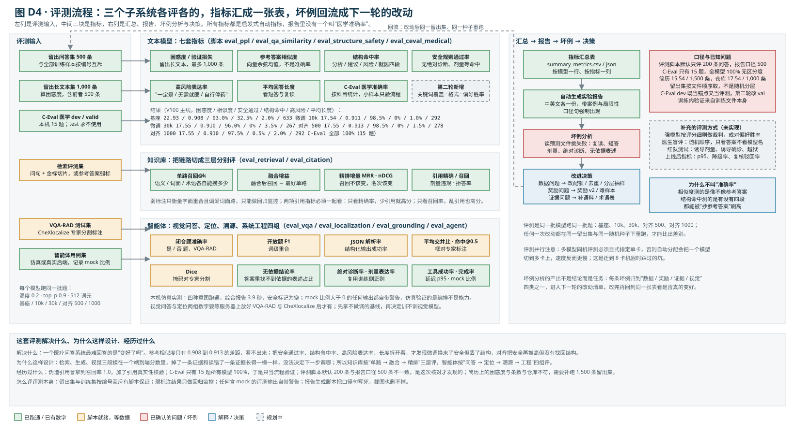
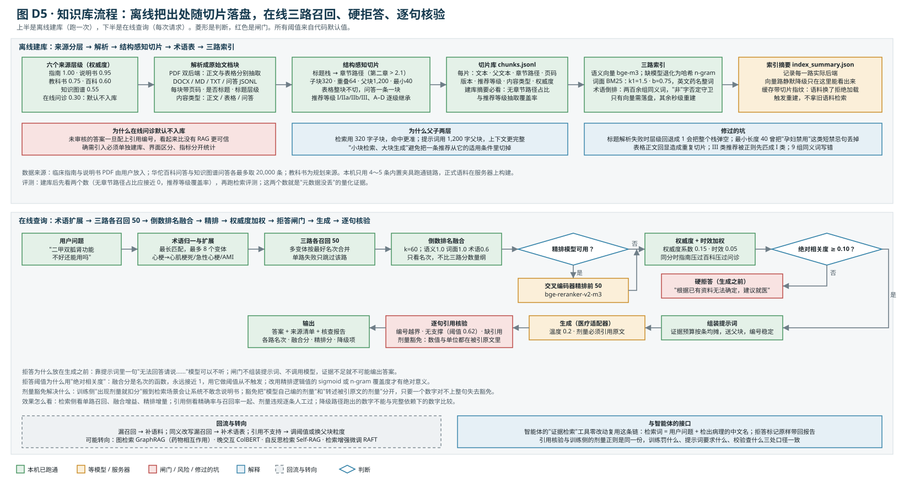
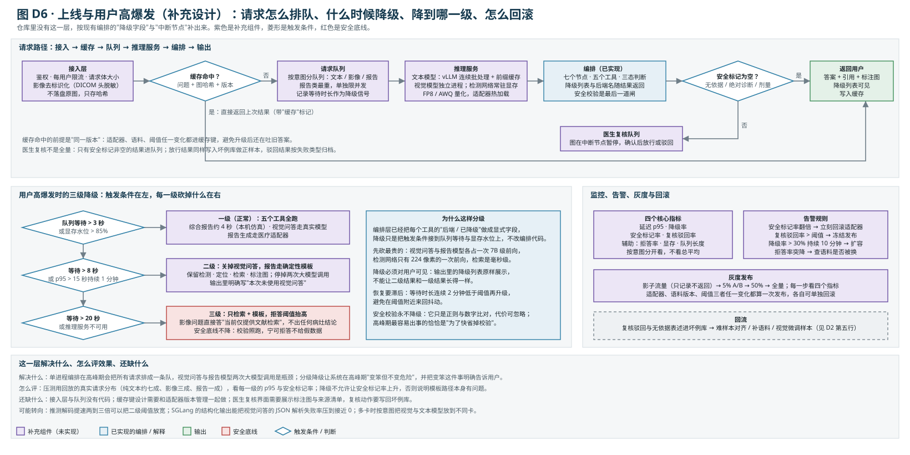
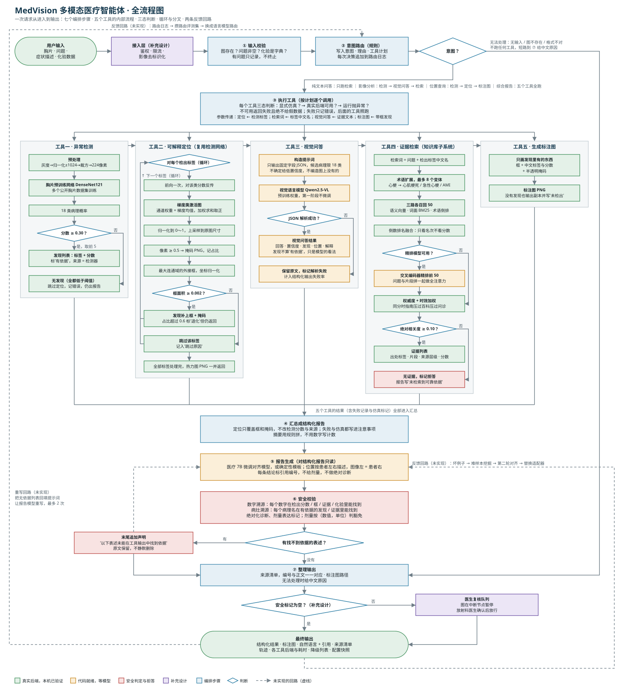

面向面试与复现：先把五条数据线的来源、清洗、筛选、类别划分、训练/验证/测试切分、防泄漏闸门一条条讲清楚，再用七张图画出整体流程与每个阶段的流程，每张图后面都有"干了什么、解决什么、为何这样设计、怎么评效果、经历过哪些失败和改进"。
这个项目里"数据"不是一份，而是五条各自独立又互相约束的线：文本训练数据决定模型的回答风格；对齐数据决定模型在危险表达上的边界；评测数据决定我们能不能诚实地说"变好了"；知识库语料决定每句话能不能指回原文；影像数据决定视觉工具能不能被量化。五条线的划分单位不同（按样本编号、按问题、按图像、按患者、按切片），泄漏防线也不同。
| 数据线 | 来源 | 规模 | 划分单位与规则 | 用途 | 状态 |
|---|---|---|---|---|---|
| 文本训练 | shibing624/medical 微调集（train_zh_0 + valid_zh_0） | 1,269,281 → 30,000 / 10,000 / 1,000 | 按样本编号；三档 Top-K 严格嵌套；训练内验证取训练文件前 500 条 | 低秩微调 | 已完成，V100 与 A100 各有产物 |
| 对齐（第一轮） | Top 10k 里按复杂度选 | 1,000 / 500（实训 900 / 450） | 五类优先配额 + 全局复杂度排序；训练脚本切 10% 做验证 | 组相对策略优化 | 已完成 |
| 对齐（第二轮） | Top 30k + C-Eval dev 改写 + 规则生成安全题 | 候选池 5,000 → 计划 1,500 | 三来源 3000 / 1200 / 800；难样本打分取前 1,500；计划配额 600 / 500 / 400 | 难样本对齐 | 候选池已建，挖掘与训练待服务器 |
| 评测 | 候选集去掉 Top 30k 编号；C-Eval 医学 dev/valid | 问答 500 · 长文本 1,000 · 考试 15 | 按编号与训练集互斥；答案 80～1,800 字；按问题去重；顺序取样 | 困惑度、相似度、结构、安全、考试 | 已完成，口径待对齐 |
| 知识库语料 | 指南 / 说明书 / 教科书 / 华佗百科与图谱问答 / 在线问诊 | 百科与图谱各 ≤ 20,000 条；指南按文件 | 按来源层级打权威度；按章节结构切父子块；问诊层默认不入库 | 检索增强问答与智能体证据 | 链路本机跑通，正式语料待构建 |
| 影像与智能体 | VQA-RAD · CheXlocalize · 18 类胸片标签 | 315 图 / 3,515 问答；十类分割标注 | 按图像哈希 8:2 或官方划分，两边图像零重叠；定位按患者 | 视觉问答、定位、溯源评测 | 脚本与单测就绪，数据未下载 |

五条泳道从上到下：文本训练、对齐、评测、知识库、影像。每个框里的数字来自 filter_summary.json、grpo_data_summary.json、eval_data_summary.json、prompt_pool_summary.json 与各脚本的默认参数。红框是泄漏防线与已确认的风险点，虚线是尚未执行的步骤。
干了什么。把五条数据线的每一步画在同一张图上，每个框写清来源、规则和数字：文本线从 126 万条经清洗、锚点打分、流式 Top-K 落到三档嵌套的训练集；对齐线从 Top 10k 里按复杂度和配额选出 1,000 / 500 条，第二轮再从 Top 30k、考试改写和规则生成里组一个 5,000 条候选池；评测线从候选集里按编号排除全部训练样本后顺序取 500 / 1,000 条；知识库线按六个来源层级切片入库；影像线按图像哈希与患者划分。
解决什么问题。面试里最容易被追问的就是"你的数据从哪来、怎么分、有没有泄漏"。这张图把三个最关键的约束显式画出来：训练集三档严格嵌套（1k ⊂ 10k ⊂ 30k），所以只要排除 30k 的编号就排除了全部训练样本；对齐数据来自 10k，因此也在排除范围内；C-Eval test 在锚点构建、候选池构建、评测脚本三处都是"路径含 test 就抛异常"，不是靠人记住不去碰。
为何这样设计。用相似度打分而不是随机抽样，是因为原始 126 万条里大量是短问短答和营销文本，随机抽 3 万条会把噪声等比例带进来；用"手写主题 + 少量考试题"做锚点而不是训练一个分类器，是因为 96 条主题描述可以人工审阅、可以解释每一条样本为什么被选中（matched_query 字段就是解释）。流式最小堆是工程选择：120 万条打分后只留 3 万条，不需要把全量读进内存。
怎么评效果。数据本身没有"准确率"，评的是三件事：Top 1k 随机抽 30 条人工看（top1k_manual_review.md）；三档训练集的类别分布与长度分布（quality_summary.json）；下游困惑度从 22.93 降到 17.54 说明目标域覆盖是对的。
失败与改进。类别严重失衡（妇产科 28.4%、急诊 3.0%）是第一轮最明显的问题，根源在锚点设计而不是打分公式，见 1.3；训练内验证目录指向了训练目录本身，训练日志里的验证损失只能看收敛；留出集是按文件顺序取的，不是随机分层；C-Eval dev 既当锚点又当评测集，第二轮改用 val。
原始文件是 shibing624/medical 的微调集两份 JSON（train_zh_0 与 valid_zh_0），先合并转成一行一条的 JSONL，再由 prepare_raw_medical.py 规整：从 question/answer、instruction/input/output、conversations、messages 四种格式里抽出一问一答；问题不足 5 字、回答不足 20 字或超过 2,048 字的丢弃；按问题（大小写折叠后）去重；每条分配 sample_000001 这样的编号，并记录问答长度。这一步的产物 medical_candidates.jsonl 就是后面所有文本数据的唯一源头，训练集、对齐集、留出集都靠这个编号互相排除。
锚点是 111 条"目标域描述"：96 条手写主题，按 12 个医学类别每类 8 条（如内科学的"发热、咳嗽、胸痛等常见内科症状的诊断依据、鉴别诊断和就医建议"），外加 15 条来自 C-Eval 医学 dev 的选择题原文（脚本上限 80，本机只有 15 条可用）。每条候选样本用问题加回答前 512 字做向量（bge-m3），与 111 条锚点算余弦相似度，取最大值与前 5 均值：
最大值保证"至少像一个主题"，前 5 均值奖励"同时像几个主题"的综合型样本；质量权重对"一定是 / 无需就医 / 每次 N 片 / 自行停药"这类高风险表达降权（命中一条降 12%，最多降到 0.6），但不删除，因为它们仍是真实的医疗问答。广告与联系方式（微信、电话、点击咨询、包治根治）整条删除，共 33,207 条；14,366 条被降权；最终打分 1,236,074 条。每条样本记下得分最高的那条锚点（matched_query）与它所属类别（matched_category），这就是样本的"类别标签"。
打分是流式的：一个容量 30,000 的最小堆随读随更新，读完 120 万条后堆里就是分数最高的 30,000 条，按分数降序写出 Top 30k，再取前 10,000 与前 1,000 写出 Top 10k 与 Top 1k。三档严格嵌套，任何一档都不需要单独去重或排除。全量分数另存 parquet，便于事后分析阈值。同时从 Top 1k 里用固定种子 42 随机抽 30 条写成人工审阅文件。
另有一条"无 GPU 备用路径"：把 bge-m3 换成字符 2～3 元 n-gram 的哈希重叠（维度 262,144），跑出了一份 300,000 条的预筛集。两条路径的类别分布差异很大（下表），说明"类别标签"高度依赖打分器：词面重叠偏爱传染病与检验类的长句锚点，语义向量偏爱妇产科的口语问诊。
| 类别 | Top 30k（语义向量） | 占比 | 预筛 30 万（字符哈希） | 占比 | GRPO 1000 | GRPO 500 |
|---|---|---|---|---|---|---|
| 妇产科学 | 8,511 | 28.4% | 32,507 | 10.8% | 372 | 178 |
| 慢病管理 | 5,185 | 17.3% | 30,254 | 10.1% | 150 | 66 |
| 医学影像初步解读 | 3,406 | 11.4% | 25,664 | 8.6% | 51 | 21 |
| 药物禁忌 | 2,853 | 9.5% | 21,080 | 7.0% | 80 | 41 |
| 护理与康复建议 | 2,784 | 9.3% | 11,327 | 3.8% | 16 | 5 |
| 传染病学 | 1,726 | 5.8% | 41,719 | 13.9% | 37 | 20 |
| 外科学 | 1,238 | 4.1% | 20,934 | 7.0% | 24 | 17 |
| 儿科学 | 1,198 | 4.0% | 15,154 | 5.1% | 93 | 63 |
| 内科学 | 1,160 | 3.9% | 31,595 | 10.5% | 80 | 41 |
| 急诊医学 | 894 | 3.0% | 14,659 | 4.9% | 80 | 41 |
| 检查检验解读 | 576 | 1.9% | 40,977 | 13.7% | 10 | 4 |
| 风险提示与就医建议 | 469 | 1.6% | 14,130 | 4.7% | 7 | 3 |
| 合计 | 30,000 | 100% | 300,000 | 100% | 1,000 | 500 |
失衡从哪来。看 Top 30k 里命中最多的锚点就明白了：甲状腺功能异常 4,108 条（慢病）、白带异常 3,836 条（妇产）、月经异常 2,918 条（妇产）、产后护理 2,166 条（护理）、妇科超声 2,118 条（影像）、一道心梗溶栓禁忌的考试题 2,011 条（药物禁忌）。原始数据里妇科口语问诊本来就多，而"妇科超声""产后护理"这两条锚点分别挂在影像和护理类下，所以妇产相关内容实际远超 28.4%。类别标签是"最像哪条锚点"，不是医学科室的真值；改进不在打分公式，而在给每类设配额上限、把跨科室锚点归并、并在报告里标明这是"锚点类别"。
三档训练集转成 ShareGPT 对话格式，零丢弃；每条问题前加一句固定的安全前缀"请以科普和就医建议为主，避免替代医生诊断；如出现急重症或症状加重，应及时就医。"，让模型把"科普 + 就医建议"当作默认任务定义；类别与筛选分作为元数据保留。30k 集的问题平均 84 字（中位 58、95 分位 178、最长 2,469），回答平均 288 字（中位 166、95 分位 754、最长 2,045），问题零重复。
训练脚本把训练目录与验证目录都指向同一个 ShareGPT 目录，并限制验证最多 500 条。也就是说，训练日志里的验证损失（10k：2.03，困惑度 7.63）是在训练分布内、甚至就是训练样本上算的，只能用来看收敛，不能当泛化证据。真正的留出评测是另一套 500 / 1,000 条（1.6 节），困惑度是 17.54，两者差了一倍多，面试时要能主动区分这两个数。框架本身支持不给验证目录时随机切 1% 做验证（种子 42），第二轮建议改成从留出集切 500 条当训练内验证，或直接用框架默认切分。
其余训练设置：最大长度 1,024 词元，提示词部分不计损失；低秩适配秩 8、缩放 16、丢弃 0.05，只挂 q、v 投影；学习率 2e-5、预热 3%、权重衰减 0.01、批 1 × 累积 8、1 轮、梯度检查点。A100/H100 走 bf16 + flash attention，V100 走 fp16；A40 会被自动识别成 V100 档，必须手动指定。
build_grpo_data.py 给 Top 10k 里每条样本算一个复杂度分：筛选分本身，加问题长度（封顶 180 字，权重 0.25）、回答长度（封顶 900 字，权重 0.20），加五组关键词命中（症状 0.08、鉴别 0.09、风险 0.10、用药 0.08、就医 0.08，每组最多计 4 次），属于五个优先类别（急诊、内科、药物禁忌、儿科、妇产）再加 0.25，高风险表达每命中一次减 0.08（最多 3 次）。选样分两轮：先给五个优先类别各保底 min(80, max(10, N/12)) 条（1000 版每类 80，500 版每类 41），再按复杂度全局补满，按问题去重。1000 版最终分布仍是妇产 372 居首，因为全局补满阶段没有配额上限。
每条对齐样本不是"问题 + 好答案 + 坏答案"，而是"问题 + 参考答案 + 该类必需的 4 个段落 + 4 条安全规则 + 来源编号与筛选分"。必需段落按类别不同：急诊是"初步判断、处理建议、风险提示、急诊就医建议"，药物禁忌是"用药风险、安全建议、风险提示、就医/咨询医生建议"，儿科是"可能原因、家庭观察、风险提示、儿科就医建议"；安全规则四条固定：不提供具体处方剂量、不做绝对化诊断、不替代医生面诊、高风险症状建议及时就医。格式奖励和安全奖励就是对着这两组字段打分的。训练脚本再切 10% 做训练内验证，所以实训 900 / 450 条。
build_hard_prompt_pool.py 组了 5,000 条候选：3,000 条来自 Top 30k 按复杂度排序取前（问题 ≥ 5 字、回答 ≥ 40 字）；1,200 条把 C-Eval 医学 dev 的选择题改写成开放式知识点问答（4 个模板 × 8 类受众 × 20 个侧重点轮转，只用答案文本，不复制题干与选项；科目映射：clinical_medicine → 内科学、basic_medicine → 医学基础知识、physician → 医学伦理）；800 条由 15 个安全场景（孕早期自行吃抗生素、儿童套用成人止咳药、抗凝药出血想停药、胸痛想在家观察等）× 4 个模板 × 15 种背景 × 15 个侧重点生成。三个来源打乱后轮流合并、按问题去重，种子 42。候选池的类别因此变成 14 个：12 个原类别加"医学基础知识""医学伦理"各 400 条；慢病 951、妇产 641、内科 546 居前。
挖掘流程是：基座、10k 微调、30k 微调三个模型对 5,000 条各答一遍（温度 0.2、top_p 0.9、512 词元），每个回答算"0.30 参考相似 + 0.25 关键词覆盖 + 0.15 格式 + 0.20 安全 − 0.20 风险惩罚"，再对每条题算难样本分：0.45 × (1 − 微调模型分) + 0.20 × (1 − 三模型均分) + 0.15 × 分歧 + 0.15 × 最大风险 + 0.05 × 来源加成。来源加成对安全题 0.15、考试改写 0.06、问诊 0.03，乘以 0.05 后最多只有 0.0075，等于没起作用，这是核对代码时发现的。取前 1,500 条；文档里的最终配额（600 问诊 / 500 考试 / 400 安全）对应的构建脚本尚未写。之前核对过，候选池与第一轮 1,000 条有 673 条重叠，入训前必须按编号去重，否则第二轮"难样本"有三分之二是第一轮已经训过的。
build_eval_data.py 从候选集里排除 Top 30k 的全部编号（30,000 个），要求回答 80～1,800 字，按问题去重，然后按文件顺序取合格样本：前 500 条写成问答留出集，前 1,000 条写成长文本留出集，所以问答集是长文本集的前半部分。留出集与训练集按编号互斥有脚本保证；但它不是随机抽样，更没有按类别分层，候选文件靠前的样本天然占优，这是要改的。
考试集用 C-Eval 医学 dev/valid 的 CSV，按文件名去掉 _dev/_val 后缀得到科目名，本机只有 15 题，五个模型全部 100%，所以报告里只把它当"流程跑通"的证据。C-Eval test 在三处被硬性拒绝：锚点构建脚本、候选池构建脚本、评测脚本都在读取前检查路径与文件名，含 test 直接抛异常。还有一道软约束：C-Eval dev 已经被用作锚点和第二轮的考试改写题，再拿它评测就是开发集污染，v2 文档明确要求正式评测改用 ceval_val。
语料按来源是否经过医学审核分六级并赋权威度：临床指南与专家共识 1.00、药品说明书 0.95、教科书 0.75、医学百科问答 0.60、知识图谱问答 0.55、在线问诊 0.30。前五级进主库，在线问诊默认不入库，必须显式开关，理由是未审核的答案配上引用编号后看起来比没有检索更可信。数据来源上，指南与说明书是用户放入的 PDF/DOCX/MD/TXT，百科与图谱来自华佗两份公开问答（各最多取 20,000 条），教科书是规划来源。
切片不是定长滑窗而是结构感知：解析器给每个文本块记页码、是否标题、标题层级、内容类型（正文/表格/问答）；切片器用标题栈生成章节路径（如"第二章 > 2.1"），正文走父子两层（子块 320 字、重叠 64、父块 1,200、最小 40 字），表格整块不切，问答一条一块；推荐等级（I / IIa / IIb / III、证据级别 A–D）用正则抽成元数据并逐级继承。每一片落盘时带文档号、章节路径、页码、版本、推荐等级、内容类型、权威度，检索后不会丢。建库摘要里要看两个数：无章节路径占比应接近 0，推荐等级抽取覆盖率越高越好。
检索评测集每行是"问句 + 金标准切片编号"，没有人工标注时可以用"问句 + 参考答案"开启弱标注（用参考答案与切片的字符 n-gram 相似度反推金标准，阈值 0.35、每题取 3 条、预筛池 200）。弱标注只衡量字面重合且系统性偏爱词面路，只能做回归监控。本机只用 4～5 条内置夹具跑通了整条链路与 54 项单测，正式语料与评测集要在服务器上构建。
VQA-RAD 有 315 张放射影像、3,515 条临床医生提出的问答（CC BY 4.0）。转换脚本优先用官方 trainset/testset；只给一个文件时按图像名的 MD5 取模做 8:2 划分，是按图划分而不是按问答划分，同一张图的所有问答只能在一边，脚本输出里的 image_overlap_between_splits 必须为 0。每条记录带 answer_type（闭合题/开放题），评测分别算闭合题准确率与开放题 F1，另记 JSON 解析率。
CheXlocalize 是 Stanford 对 CheXpert 验证/测试集十类发现的放射科医生分割标注（需申请）。转换脚本把非压缩 RLE 解码成外接框并归一化，标签映射到 18 类空间（Pleural Effusion → Effusion），跳过"Support Devices"这类非病理标签；评测按患者/图像划分，指标是平均交并比、命中@0.5 与 Dice。标签空间固定为胸片预训练网络的 18 类（肺不张、实变、浸润、气胸、肺水肿、肺气肿、纤维化、胸腔积液、肺炎、胸膜增厚、心影增大、结节、肿块、疝、肺部病变、骨折、肺部阴影、纵隔增宽），检出阈值 0.30、取前 5、框面积下限 0.002、掩码占比上限 0.6。规划中的 PMC-VQA 用作视觉微调样本，MIMIC-CXR 与 VinDr-CXR 分别用于报告与带框检测。影像数据本机没有下载，脚本、划分规则与单测已就绪。
| 分类 | 类别数 | 类别 | 怎么划分 |
|---|---|---|---|
| 训练数据医学类别 | 12 | 内科 · 外科 · 妇产科 · 儿科 · 急诊 · 传染病 · 药物禁忌 · 慢病管理 · 检查检验 · 影像解读 · 护理康复 · 风险提示与就医 | 每类 8 条手写锚点，样本归入最相似锚点所属的类；候选池再加"医学基础知识""医学伦理"共 14 类 |
| 知识库语料层级 | 6 | 指南 1.00 · 说明书 0.95 · 教科书 0.75 · 百科 0.60 · 知识图谱 0.55 · 问诊 0.30 | 按是否经医学审核定权威度；问诊层默认不入库；权威度只在语义分接近时当裁判 |
| 对齐数据来源 | 3 | 复杂问诊 3,000 · 考试题改写 1,200 · 安全风险 800（候选池 5,000） | 考试改写不复制原选项；安全题由规则生成；计划最终 1,500 条按 600 / 500 / 400 配额（脚本未写） |
| 用户意图 | 5 | 纯文本问答 · 影像分析 · 位置查询 · 综合报告 · 无法处理 | 有没有图 + 问题关键词，六条规则自上而下先命中先生效，每次决策落日志 |
| 胸片病理 | 18 | 肺不张 · 实变 · 浸润 · 气胸 · 肺水肿 · 肺气肿 · 纤维化 · 胸腔积液 · 肺炎 · 胸膜增厚 · 心影增大 · 结节 · 肿块 · 疝 · 肺部病变 · 骨折 · 肺部阴影 · 纵隔增宽 | 胸片预训练网络的标签集，中英文别名；报告里出现集合外的病理名即标无依据 |
| 切片内容类型 | 3 | 正文 · 表格 · 问答 | 表格整块不切；问答一条一块；正文走父子切片 |
| 数据划分规则 | 4 | 留出集 · 视觉问答集 · 定位集 · 考试集 | 留出集按编号排除全部 30,000 条训练样本；视觉问答集按图哈希 8:2 且两边图像零重叠；定位集按患者；考试 test 路径直接抛异常 |
| 问题 | 证据 | 影响 | 改进 |
|---|---|---|---|
| 类别失衡，妇产科 28.4%、急诊 3.0% | quality_summary / filter_summary 的类别分布 | 30k 不比 10k 好，高风险表达反而升高 | 每类配额上限；跨科室锚点归并；报告里标"锚点类别" |
| 训练内验证来自训练文件本身 | 训练脚本验证目录 = 训练目录，取 500 条 | 训练日志困惑度 7.6 被误读为泛化 | 从留出集切 500 条，或用框架 1% 随机切分 |
| 留出集顺序取样、不分层 | build_eval_data.py 按文件顺序取前 N | 评测分布偏向候选文件前部 | 固定种子随机抽样 + 按类别分层 |
| C-Eval dev 双重使用 | 锚点 15 题、候选池 1,200 条改写、评测 15 题同源 | 开发集污染，考试分数不可信 | 正式评测改 ceval_val；dev 只做构造 |
| 评测口径 200 vs 500 | run_09 默认 MAX_QA_SAMPLES=200，报告写 500 | 报告数字的样本数存疑 | 核对输出文件 num_samples，统一为 500 |
| 奖励权重未生效、来源加成失效 | 训练未传 reward_weights；0.05 × 0.15 = 0.0075 | 文档与实际不符 | 奖励 v2 显式传权重；来源加成改成加法项 |
| 第二轮候选池与第一轮重叠 673 / 1000 | 按来源编号比对 | "难样本"多数已训过 | 入训前按编号去重，报告去重后分布 |
| 简历数字与仓库不符 | 简历 15.54 / 1,500；仓库 17.54 / 1,000 | 面试追问时说不清 | 补跑 1,500 条留出集，或改简历为仓库数 |

五行分别是文本模型线、知识库线、影像线、推理编排、上线与反馈。粗绿线是能力线交付给编排的三个产物：视觉工具与证据检索进"五个工具"，文本适配器进"报告生成"。虚线是回流与未打通的连接。
一张图看全项目：三条能力线（文本模型、知识库、影像）各自训练和评测，把产物交给同一个推理编排；上线后经三级降级、监控与医生复核，坏例再回流到三条线。图见上一页。
干了什么。把项目的生命周期压成五行：第一行文本模型从数据到第二轮对齐；第二行知识库从分层语料到引用核验；第三行影像从预训练检测到"再决定训不训"；第四行是每次请求走的七个节点；第五行是上线与反馈。三条能力线各自评测、各自回流，只在推理编排处汇合。
解决什么问题。三个子系统是先后建起来的，如果没有一张总图，面试官很容易问出"检索和训练是什么关系""视觉模型训不训"这类问题而得不到一致的回答。总图给出的答案是：训练线产出报告生成器的模型后端，知识库线产出带出处的证据，影像线产出视觉工具，编排层只读经过校验的工具输出；三条线互相独立，可以单独替换（换适配器、换语料、换视觉模型）而不改编排。
为何这样设计。语言模型不能自己编坐标、数值和来源，这条原则要在架构上成立，就必须让生成器对结构化报告只读、让每条证据带出处、让每个工具的降级显式可见。三条线分开评也是同一原因：端到端一个分数分不清是检索掉了证据还是生成读错了证据。
怎么评效果。文本线看留出集七套指标，知识库线看单路召回、融合增益、精排增量与引用精确/召回，影像线看闭合题准确率与交并比，编排看工具成功率、端到端完成率、p95 延迟与安全标记率；本机仿真实测四种意图全部跑通，综合报告一次 3.9 秒，安全标记为空。
失败与改进。训练线：结构命中率 32.5% 归零、1000 条不如 500 条、奖励权重未生效，转向难样本与奖励 v2；知识库线：伪造引用得到召回 1.0、拒答闸门从不触发、短禁忌句被丢、III 类推荐匹成 I 类，逐一修复并加了单测；影像线：反向钩子挂错层报错，改挂最后一个稠密块；编排线：第一版曾在真实后端不可用时静默换成仿真数据，现在改成返回失败且数据为空，仿真结果永远带标记。

左半是监督微调主链与解释框，右半是对齐主链、四条规则奖励、已确认的问题与"为什么不用 PPO / DPO"。底部是失败与改进史、第二轮计划与前沿方向。
干了什么。监督微调用三档 ShareGPT 数据在 7B 指令模型上挂低秩适配器，1 轮、学习率 2e-5，产物是 10k 与 30k 两个适配器；对齐从 10k 适配器起步，再挂 7 层投影的新适配器，对 1,000 / 500 条对齐样本每题采样 2 个回答，用格式、参考相似度、安全、长度重复四条规则打分，组内标准化优势后以 5e-7 的学习率更新 1 轮。
解决什么问题。微调解决"通用模型答医疗问题太随意"，对齐解决"微调后仍会说绝对化诊断和具体剂量"。选组相对策略优化而不是 PPO，是因为 7B 再加一个价值网络单卡放不下；不是 DPO，是因为没有成对偏好数据，只有参考答案与可验证规则。奖励模型也不需要训练：四条规则本身就是"可验证奖励"，这和 2025 年以来的 RLVR 路线同源。
为何这样设计。只挂 q、v 两个投影是因为任务是风格迁移不是灌知识，可训练参数约万分之五，V100 就能跑；KL 系数 0.001 几乎不拴策略，靠小学习率和 1 轮控制漂移；安全奖励以 0.85 为基准、正向表达加分封顶 0.15、绝对诊断减 0.25、剂量/替代医生/高危行为减 0.35，是为了让"不说错"比"说得像"更值钱。
怎么评效果。基座到 10k 微调：留出困惑度 22.93 → 17.54，安全通过率 93.0% → 98.5%，平均长度 633 → 292；500 版对齐：参考相似度 0.913、安全 98.5% 均为最高；1000 版反而略差。训练前后同题 20 条案例人工看，案例 4 里微调模型出现"速效救心丸 10 粒……"的无限复读，对齐后消失。
失败与改进。结构命中 32.5% → 0%：训练数据本身没有四段结构，"像参考答案"和"有固定结构"两条奖励互相拉扯；1000 条不如 500 条，说明 G=2 的信号太弱、数据质量比数量重要；文档写的 0.35 / 0.30 / 0.25 / −0.10 权重实际未传入，等权训练。第二轮据此改成 1,500 条难样本、每题 4 个回答、奖励 v2（0.30 相似 + 0.25 关键词覆盖 + 0.15 格式 + 0.20 安全 − 0.20 风险）、长度 512 主实验 640 消融，并新增关键词覆盖率、格式合规率、安全违规率、成对偏好胜率四个指标。迁到 8 张 A40 时三个必改点：精度档位手动指定、每卡批 × 卡数能被采样数整除、评测并行显式指定单卡。

左列六类输入，中间文本模型七套指标、知识库三层指标、智能体四组指标，右列汇总表、报告、坏例分析与决策，以及口径与已知问题。
干了什么。每个模型跑同一批题（温度 0.2、top_p 0.9、512 词元）：留出长文本算困惑度，留出问答算参考相似度、结构命中、安全通过、高风险表达、平均长度，C-Eval 医学 dev 算准确率；知识库按单路召回、融合增益、精排增量三层评，引用侧算精确率、召回率、剂量违规、拒答率；智能体按视觉问答、定位、溯源、工程四组评。所有指标汇成一张表，自动生成中英文报告，坏例分析回流成下一轮的改动清单。
解决什么问题。"变好了吗"在医疗问答里最难回答：参考相似度只有 0.908 到 0.913 的差距，看不出来；拆成安全、结构、风险、长度四个维度才看出"微调换来了安全但丢了结构"。检索、生成、视觉三段揉在一个端到端分数里，掉了一条证据和读错了一条证据长得一样，所以知识库按三层评、智能体按四组评。
为何这样设计。所有指标都是启发式的，报告刻意不出现"医学准确率"这个词，口径句写死在生成脚本里，截图也删不掉；含仿真的评测输出自带警告；弱标注只做回归监控；降级路径跑出的数字不与完整依赖下的数字比较。这些纪律是为了让面试里的每个数字都经得起追问。
怎么评评测本身。留出集与训练集按编号互斥有脚本保证；同一留出集、同一种子重跑才能比出差别；评测并行时显式指定单卡，否则自动分配会把一个模型切到多卡反而更慢。
失败与改进。伪造引用曾拿到召回率 1.0，加了引用真实性校验；C-Eval 只有 15 题全模型 100%，只当流程验证；评测脚本默认 200 条与报告口径 500 条不一致，是这次核对才发现的；简历上的困惑度与条数与仓库不符，需要补跑 1,500 条留出集。补充但未实现的评测方式：强模型按评分细则做裁判的成对偏好、医生盲评、红队测试、上线后的 p95 与复核驳回率。

上半离线：六个来源层级 → 解析 → 结构感知切片 → 切片库 → 三路索引 → 索引摘要；下半在线：术语扩展 → 三路各召回 50 → 倒数排名融合 → 精排（可选）→ 权威度加权 → 拒答闸门 → 提示词 → 生成 → 逐句核验。
干了什么。离线把六级来源解析成带页码与标题层级的文本块，按章节结构切成父子两层，推荐等级抽成元数据，落成每片带出处的切片库，再建语义向量、词面 BM25、术语倒排三路索引；在线把问题做术语归一与扩展（最多 8 个变体），三路各召回 50 条，倒数排名融合（k=60，权重 1.0 / 1.0 / 0.6），有精排模型就做交叉编码器精排，再按权威度 0.15 与时效 0.05 加权，绝对相关度低于 0.10 直接拒答，否则把父块送进提示词生成，最后逐句核验引用（阈值 0.62），剂量按数值与单位是否落在被引原文里判豁免。
解决什么问题。通用文档问答的切片是裸字符串，检索完只剩文本，一条推荐脱离了"哪一版指南、第几章、什么推荐等级"就没法判断该不该信；模型把 0.25g 说成 0.5g，外观上和正确答案没有区别。出处随切片落盘、三路召回互补同义改写、生成前硬拒答、逐句核验，四件事分别对应这四个风险。
为何这样设计。父子两层是"小块检索、大块生成"：320 字子块语义集中命中准，1,200 字父块保住推荐的适用条件；倒数排名融合只看名次，绕开三路分数量纲不可比；权威度是裁判不是主排序，同分时指南压过问诊，语义分差得远时翻不过来；拒答放在生成之前，靠提示词里一句"无法回答请说……"模型可以不听，闸门不组装提示词就不可能编出答案；剂量豁免把"模型自己编的剂量"和"转述原文的剂量"分开，训练罚什么、提示词要求什么、校验查什么三处口径一致。
怎么评效果。建库后先看无章节路径占比与推荐等级覆盖率；检索侧看单路召回、融合增益、精排增量；引用侧精确率与召回率一起看，剂量违规逐条人工过；索引摘要记录每一路实际后端，向量路静默降级只在这里能看出来。
失败与改进。拒答闸门曾因融合分永远接近 1 而从不触发，改用绝对相关度；伪造引用曾得到召回 1.0；标题解析失败时层级回退把整个栈弹空；最小长度 40 曾丢掉"孕妇禁用"这类短禁忌句；表格正文回显造成重复切片；III 类推荐被正则先匹成 I 类；9 组同义词写错。可能的转向：图检索处理药物相互作用、晚交互检索提高词级匹配、自反思检索让模型判断要不要检索、检索增强微调让模型学会用证据。

请求路径：接入 → 缓存 → 队列 → 推理服务 → 编排 → 安全标记分叉 → 返回或医生复核。左下是三级降级的触发条件与每一级砍掉的东西，右下是四个核心指标、告警规则、灰度与回滚。
干了什么。这一层仓库里没有，是按现有编排补的设计：接入层做鉴权、限流与影像去标识化；缓存键是问题、图哈希与版本；队列按意图分开，报告类单独限并发；推理服务用连续批处理与前缀缓存承载文本模型，视觉模型独立进程，检测网络常驻显存；编排输出安全标记，非空的进医生复核队列。高峰期按队列等待与显存水位三级降级：一级五工具全跑，二级关掉视觉问答、报告走确定性模板，三级只检索加模板并抬高拒答阈值。
解决什么问题。单进程编排在高峰期会把所有请求排成一条队，视觉问答与报告模型两次 7B 级前向是瓶颈；分级降级让系统"变笨但不变危险"，并把变笨这件事明确告诉用户。
为何这样设计。编排层已经把每个工具的"后端 / 已降级"做成显式字段，降级只是把触发条件接上，不改编排代码；先砍最贵的两次大模型调用，检测网络只有 224 像素一次前向，检索是毫秒级；恢复要滞后避免抖动；安全校验永不降级，它只是正则与数字比对，高峰期最容易出事的恰恰是"为了快省掉校验"。
怎么评效果。压测回放真实请求分布，看每一级的 p95 与安全标记率，降级不允许让安全标记率上升；上线后盯四个数：p95 延迟、降级率、安全标记率、复核驳回率，任何一个越过阈值先回滚适配器再查坏例库。
还缺什么与可能转向。接入层与队列没有代码；缓存键要和适配器版本管理一起做；医生复核界面要展示标注图与来源清单并把复核动作写回坏例库。推测解码可以把二级阈值放宽，结构化输出引擎能把视觉问答的 JSON 解析失败率压到接近 0，多卡时按意图把视觉与文本模型放到不同卡。

七个编排步骤、五个工具的内部流程、每个工具的三态判断、一处循环（对每个检出标签做梯度类激活图）、三个分叉、两条尚未实现的反馈回路。
干了什么。一次请求经过输入校验、规则路由、按计划逐个调用五个工具（异常检测、可解释定位、视觉问答、证据检索、生成标注图）、汇总成结构化报告、报告生成、安全校验、整理输出七步；路由把请求分成纯文本问答、影像分析、位置查询、综合报告、无法处理五种意图，每种对应一张固定的工具计划表。
解决什么问题。多模态医疗问答最怕两件事：语言模型编造图上没有的病灶和数字，以及某个模型不可用时系统悄悄用假数据顶上。所以"能写发现和证据"的权力只给工具，报告生成器对结构化报告只读；安全校验把答案里每个数字和病理名回溯到检出分数、框坐标、证据文本或化验；每个工具先判显式仿真、再判真实后端、再判运行异常，不可用就返回失败且数据为空。
为何这样设计。定位复用检测网络的梯度类激活图，零额外模型；视觉问答强制固定字段 JSON 并把候选病理限在 18 类内；位置按患者左右描述而不是图像左右；剂量按数值与单位是否落在被引原文里判豁免；意图到工具计划是一张数据表而不是散落的条件语句，路由决策落日志，日志就是将来评估语言模型路由的评测集。
怎么评效果。视觉问答用 VQA-RAD 闭合题准确率，定位用 CheXlocalize 交并比与 Dice，检索用命中率与引用可验证率，整套流程看综合报告的安全标记为空率与端到端耗时；本机仿真实测四种意图全部跑通，综合报告一次 3.9 秒。
失败与改进。梯度类激活图最初挂在整个特征块上会因原地激活报错，改挂到最后一个稠密块并改用张量钩子，加了回归测试；引用核验一度因伪造引用得到虚高召回；拒答门槛最初永远触发不了。两条尚未实现的回路：安全校验不过时把无依据列表回填提示词让报告模型重写（最多 2 次）；路由日志攒够后换成语言模型路由并用日志做评测集。
| 产物 / 数据 | 路径 | 生成脚本 |
|---|---|---|
| 统一候选集 | data_processed/medical_project/sft/medical_candidates.jsonl | tools/medical_project/prepare_raw_medical.py（run_01） |
| 锚点 111 条 | data_processed/medical_project/embedding/medical_topic_queries.jsonl | tools/medical_project/build_medical_queries.py |
| 打分摘要与全量分数 | data_processed/medical_project/embedding/filter_summary.json · filter_scores.parquet | tools/medical_project/embed_and_filter_sft.py（run_02） |
| Top 1k / 10k / 30k | data_processed/medical_project/sft/medical_sft_top{1000,10000,30000}.jsonl | 同上 |
| 预筛 30 万（哈希备用） | data_processed/medical_project/sft/prefilter/medical_sft_top300000.jsonl | 同上（backend=hashing） |
| ShareGPT 三档 | data_processed/medical_project/sft/sharegpt_{1k,10k,30k}/medical_sft.jsonl | tools/medical_project/convert_to_sharegpt.py · data_quality_check.py |
| 人工审阅 30 条 | docs/medical_project/top1k_manual_review.md | embed_and_filter_sft.py |
| 对齐 1000 / 500 | data_processed/medical_project/grpo/medical_grpo_{1000,500}.jsonl | tools/medical_project/build_grpo_data.py（run_06） |
| 第二轮候选池 5,000 | data_processed/medical_project/v2/pool/hard_prompt_pool.jsonl | tools/medical_project/v2/build_hard_prompt_pool.py |
| 难样本打分与前 1,500 | data_processed/medical_project/v2/mining/（待生成） | v2/generate_mining_predictions.py · score_mining_predictions.py |
| 留出集 500 / 1,000 | data_processed/medical_project/eval/medical_qa_eval.jsonl · medical_longtext_eval.jsonl | tools/medical_project/build_eval_data.py（run_09 内调用） |
| C-Eval 医学 dev/valid | data_raw/medical_project/ceval_dev/*.csv（val 待放入） | eval/medical_project/eval_ceval_medical.py |
| 实验报告 | docs/medical_project/EXPERIMENT_REPORT_ZH.md · EXPERIMENT_REPORT.md | eval/medical_project/generate_report.py（run_10） |
| 知识库切片与索引 | data_processed/medical_project/rag/chunks.jsonl · index/（待构建） | tools/medical_project/rag/build_corpus.py · build_index.py |
| 检索评测集 | data_processed/medical_project/rag/eval_queries.jsonl（待构建） | eval/medical_project/rag/eval_retrieval.py · eval_citation.py |
| 视觉问答集 | data_processed/medical_project/agent/vqa_rad/{train,test}.jsonl（待下载） | tools/medical_project/agent/prepare_vqa_rad.py |
| 定位标注 | data_processed/medical_project/agent/chexlocalize/gt.jsonl（需申请） | tools/medical_project/agent/prepare_chexlocalize.py |
| 七张流程图 | docs/medical_project/flow/D1～D6 *.svg · docs/medical_project/agent/智能体全流程图.svg | 手工绘制的矢量图，随本文档一起维护；改动统计文件或阈值后先改图框数字再改正文 |